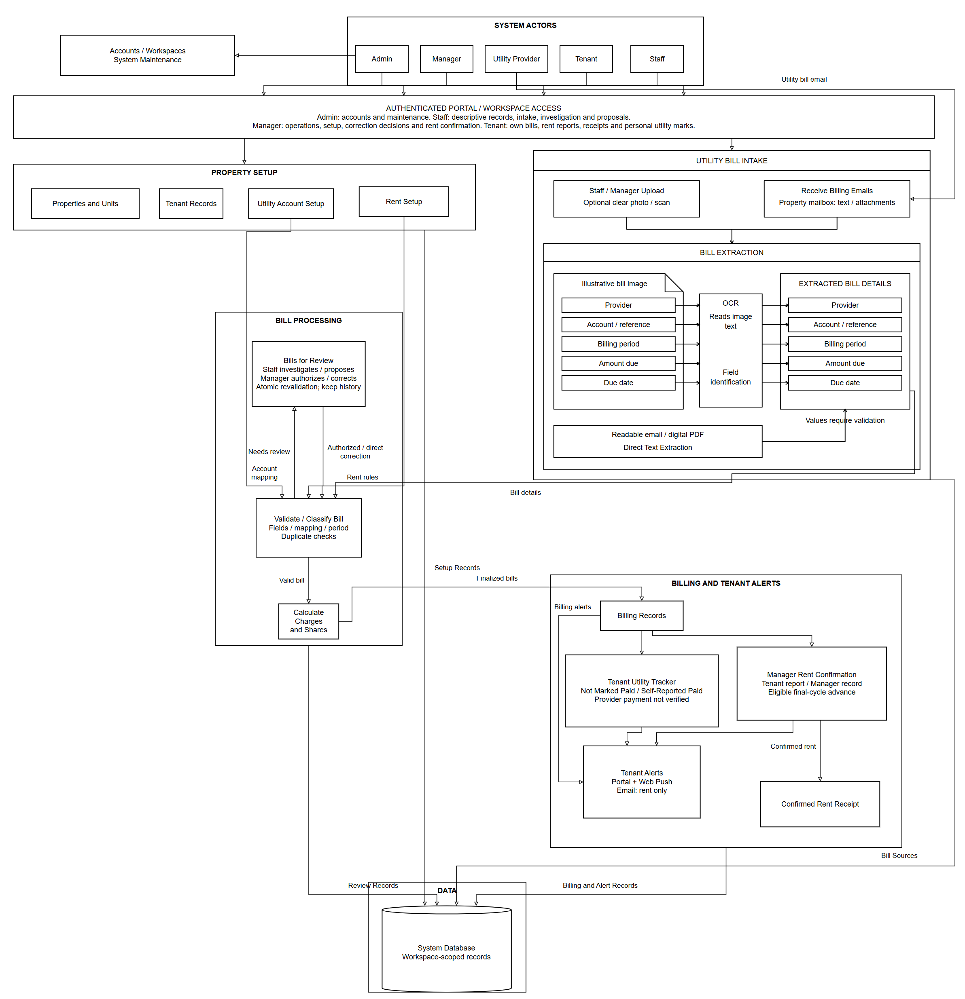
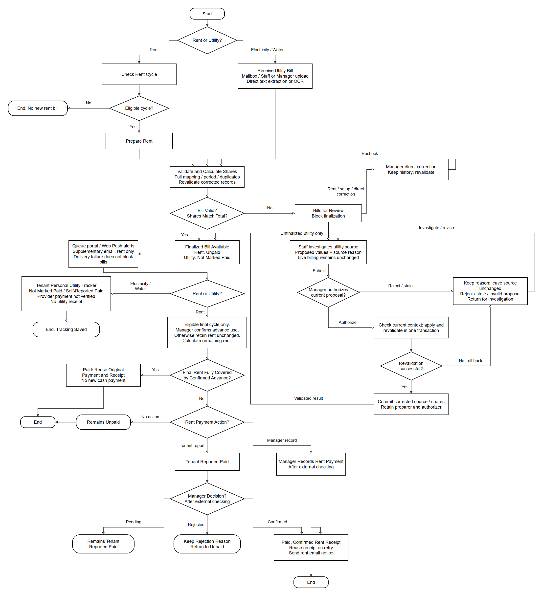
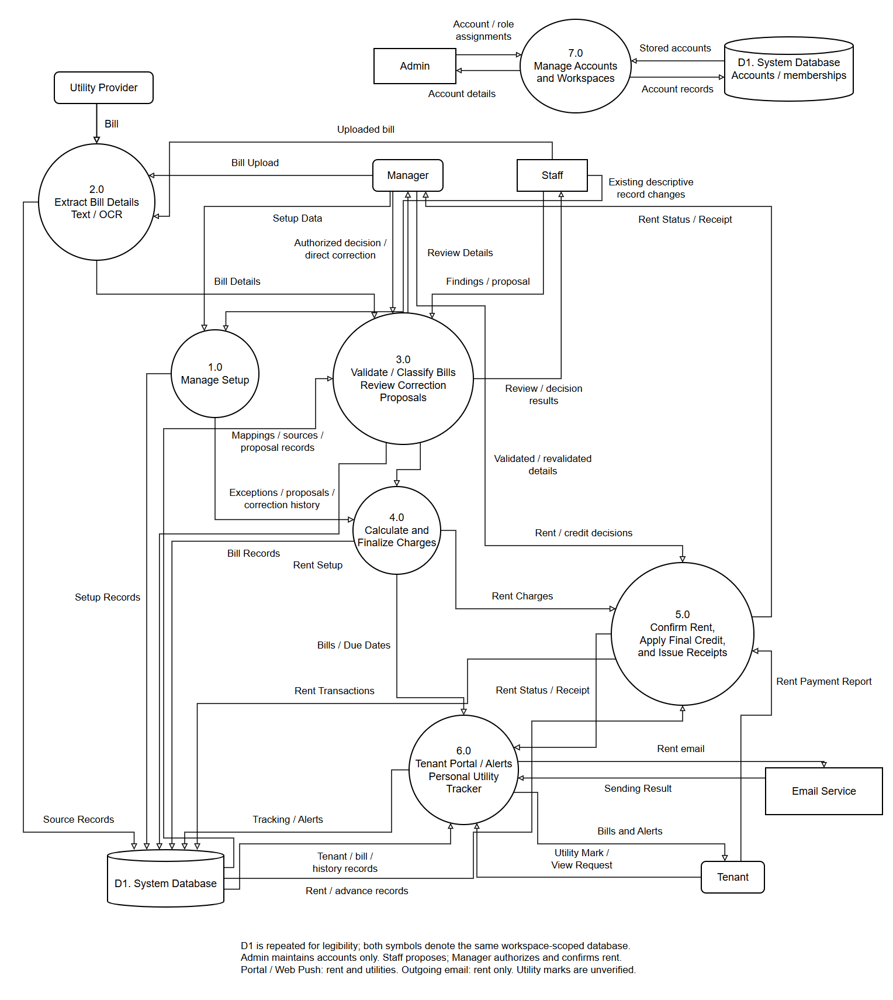

27 October 2026. Editable sources remain in the parent diagrams folder. Full figures show the complete workflow; enlarged landscape detail PDFs preserve readable labels on paper. These are figure exports, not final manuscript pagination.


